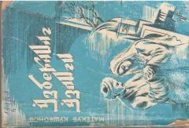

OOAbdulla Qodiriy ijodiga bagʻishlangan adabiyotshunoslik tadqiqoti.
Ushbu kitob buyuk oʻzbek adibi Abdulla Qodiriy ijodining muhim qirralari va uning oʻzbek adabiyotidagi oʻrniga bagʻishlangan. Muallif Matyoqub Qoʻshjonov adib asarlaridagi milliy ruh, maʼnaviyat va badiiy mahorat masalalarini tahlil qiladi.